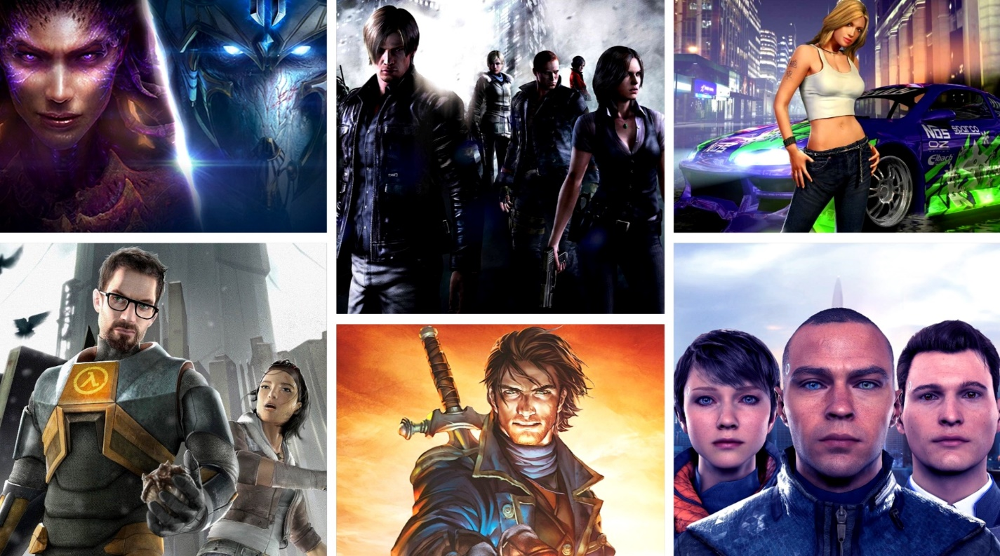
Игроки по всему миру любят проекты в разных жанрах: от незамысловатых пазлов до глобальных стратегий.
Но как определить какой вид интерактивных развлечений больше понравится вам?
Попробуем разобраться в статье и сделать подборку знаковых игр по жанровым принадлежностям.
Довольно сложно пытаться выделить жанры компьютерных игр, так как постоянно происходит пересечение и смешение разных механик, а индустрия все еще достаточно молода. Есть несколько признанных классификаций, но самая свежая и полная из них была сформулирована в 2014 году.
С этих пор зародились новые поджанры игр, а некоторые гибриды прочно осели среди устоявшихся классов. Разберем основные типы и попытаемся придать форму всему многообразию компьютерных развлечений.
Экшены
В категорию экшены попадают все проекты, которые так или иначе в первую очередь направлены на действие, а результата персонаж достигает именно приложением физической активности в рамках игры.
Shoot’em up

Из названия сразу становится понятно, чего от нас хотят. Задача проста – перестрелять всех. «Беги и стреляй» тоже входит в данный тип стрелялок. Самыми яркими представителями являются: Contra, серия Metal Slug и современный Cuphead.
Объединил в себе этот класс и scroll shooter, где главный герой находится в постоянном движении в одном из направлений и может лишь уклоняться от летящих в него снарядов и атаковать волны противников и боссов.
Сюда же смело можно вносить рельсовые шутеры, что раньше выделялись в отдельную категорию. Представителей осталось мало, да и те в основном переиздания старых проектов. Характеризуются они только лишь перемещением перекрестия прицела по экрану для стрельбы по вражинам. Ходить самостоятельно игрок не может. (серия The House of The Dead)
Аренные шутеры

Данные игры появились еще во времена Quake 3 и Unreal Tournament. Это соревнования между игроками на аренах в нескольких дисциплинах, обычно связанных с доминированием над противником командами или сразу против всех геймеров на карте. Жанр все еще существует и развивается в смешении новых концепций и идей. Rocket Arena – яркий тому пример.
Платформеры
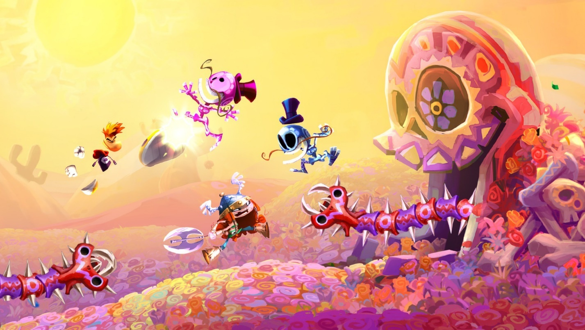
Основой геймплея данного класса являются прыжки по платформам, от чего и пошло название. Обычно это красочные и яркие проекты, а на ум сразу приходят серии Mario, Sonic the Hedgehog, Rayman. Бегай по уровням от начальной точки к конечной, собирай бонусы, да побеждай врагов. Данные серии перешли в 3D, но оставили основные механики и концепции, которые стали подспорьем и для последователей.
Beat’em up

Разновидность экшена, где нам придется избивать врагов на уровнях, используя для этого собственные кулаки и ноги или подбирая разбросанные предметы. Такие серии как Streets Of Rage, Teenage Mutant Ninja Turtles время от времени появляются на наших экранах, хотя жанр претерпел много изменений и стал использоваться как одна из механик в более продвинутых играх.
Fighting
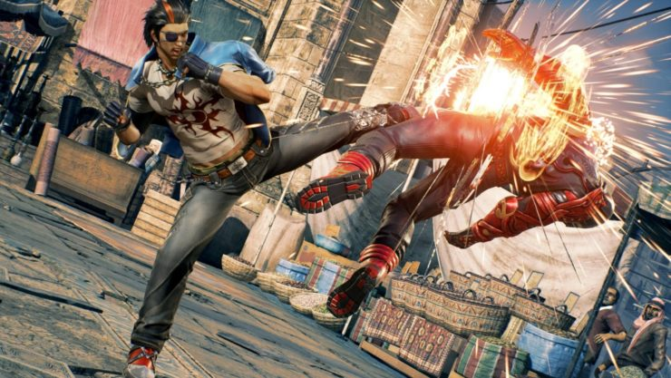
Файтингам повезло гораздо больше. Регулярно выходят новые части именитых серий типа Tekken, Mortal Kombat, Injustice, Guilty Gear и прочих.
Перед нами обычно широкий ростер персонажей с уникальной внешностью и приемами, которые избивают друг друга на импровизированных аренах или рингах. Чаще всего в повествование вмешивается элемент фантастики, но есть и вполне спортивные направления данного жанра, выполненные по существующим единоборствам.
Шутер от первого лица

С данным видом пострелушек все предельно ясно. Мы видим все от лица протагониста, а в кадре обычно только разнообразнейшие пушки, которыми мы истребляем все что настроено к нам враждебно. Сеттинг не важен. Это может быть и Вторая мировая (Call of Duty, Medal of Honor), так и фантастические поля битв с демонами или пришельцами (DOOM, Wolfenstein, Quake).
Постепенно границы устоявшихся канонов пошатнулись и потому большинство шутеров от первого лица сейчас имеет более чем вменяемый сюжет, а иногда полностью завязан на действиях в открытом мире (Far Cry, Half-Life, Prey).
Сложно встретить представителей старой школы: появляются они обычно в инди сегменте, как дань уважения классике (Dusk, Amid Evil, Ion Fury).
Экшен от третьего лица

Сюда можно отнести не только те шутеры, которым камеру переместили за спину главного героя и этим и ограничились. Чаще всего, в таких проектах нам показывают персонажа не просто так. С нами делятся историей, в которую проще вжиться, если будем наблюдать за действиями протагониста, его страданиями и трудом. Такие чары обычно очень яркие, характерные и выделяются на фоне противников.
Серия Max Payne – прекрасный пример таких экшенов, которые смешали постоянное действие с фишками механики и глубоким повествованием. Некоторые из представителей использовали концепцию тактических перестрелок из укрытия, что стало нормой жанра (Kill Switch, Gears of War, Kane & Lynch).
Если дать герою волю крошить монстров не только стрелковым оружием, но и мечами, посохами, косами и другим холодным вооружением, выполняя при этом комбинации и показывая чудеса акробатики, то можно отнести этот проект к поджанру Слэшеров (DMC, Enclave, God of War).
Ритм игры

Основной механикой ритм игр является попадание действий игрока под ритмический строй композиции на фоне. Сама по себе эта особенность геймплея используется редко и сочетается с другими жанровыми видами. Есть и шутеры, где выстрелы совпадают с партией ударных (BPM: Bullets Per Minute). Есть аркады, где движение сопоставляется с потоком музыки (Crypt of the NecroDancer, Audiosurf) Встречаются проекты с симуляцией танцев и музыкальных инструментов (Guitar Hero, Drums Rock, Just Dance).
Симуляторы
В данную ветку можно выделить все проекты, что хоть как-то затрагивают управление человека различными средствами передвижения, а также повторение некоторых аспектов жизни, которые можно воспроизвести в компьютерном пространстве.
Авиасимуляторы
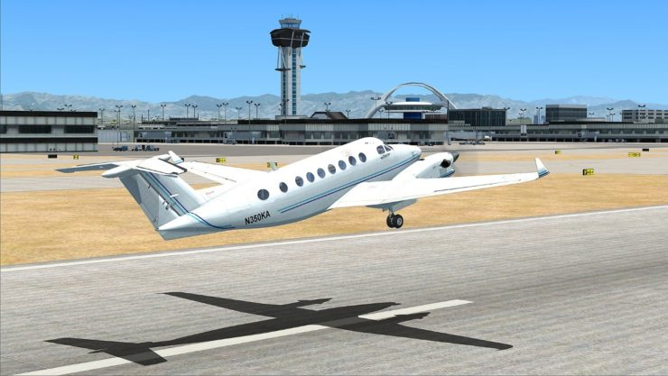
Здесь можно найти разной сложности игры, связанные с полетами на самолетах, вертолетах, парапланах и другой воздушной технике. Обычно все достаточно натурально и с необходимостью разбираться в приборах и основах пилотирования (Microsoft Flight Simulator), но встречаются и более аркадные версии (Ace Combat).
Автосимуляторы
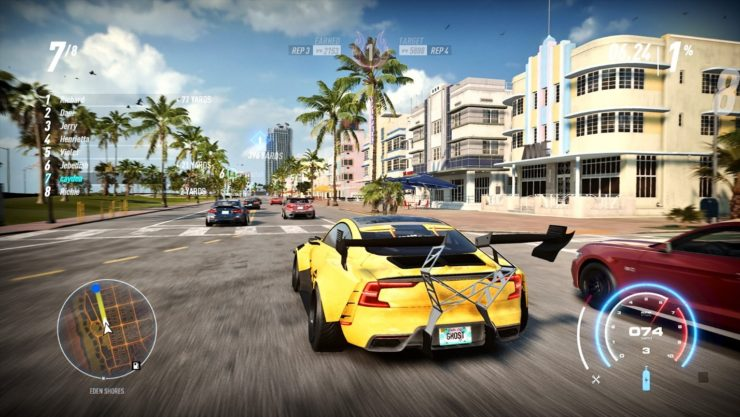
Автосимуляторы полностью посвящены езде на различных автомобилях, мотоциклах, грузовиках и всем прочем, что имеет колеса. На выбор есть серьезные соревнования, требующие хорошего контроллера и опыта вождения (Assetto Corsa, iRacing, F1), и зрелищные уличные гонки (NFS), и размеренные медитативные перевозки грузов (Euro Truck Simulator).
Космосимуляторы
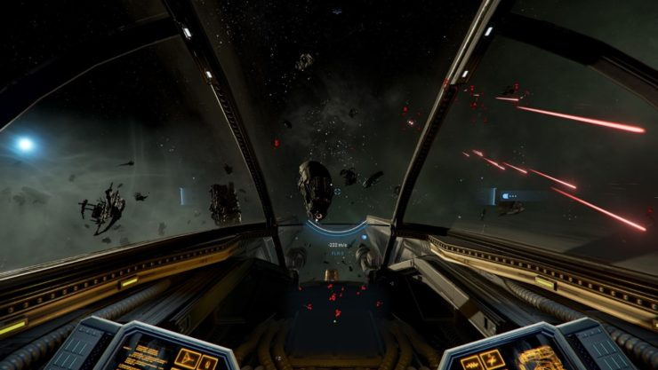
Основы данного жанра заложила еще Elite, которая отправила геймеров бороздить космические пространства, торговать с населенными станциями и планетами, воевать с космическими пиратами и строить свою империю. Перед нами появились десятки последователей: Freelancer, серия X, Star Citizen и многие другие, что расширяют возможности, но верны первоисточнику.
Симуляторы жизни

К симуляторам жизни можно отнести не только знакомую многим The Sims, которая позволяет взять под контроль жизни компьютерных человечков, по запросам и характерам похожих на нас с вами. Есть и более всеобъемлющие игры вроде Spore, где мы развиваемся с одноклеточного организма, до космической расы. Есть специфические симуляторы животных и насекомых, дающие вжиться в существ других видов и больше узнать о них (Shelter).
Симуляторы строительства

Отчасти серия the Sims тоже является симулятором строительства, но лишь на меньшую половину. Настоящие же представители жанра полностью показывают процесс от возведения жилища, до его отделки (House Flipper, Construction Simulator). Почувствовать себя архитектором и строителем хотят многие игроки, как оказалось.
Спортивные симуляторы

К спортивным симуляторам можно отнести все компьютерные игры, так или иначе основанные на реально существующих видах соревнований. Это и футбол (Fifa, PES), и хоккей (NHL), и баскетбол (NBA2k), и боевые единоборства и бокс (Real Boxing, Fight Night Round, Ultimate MMA, UFC).
Главное – следование правилам дисциплины и достоверные составы или стили.
Приключения
К приключениям можно отнести все компьютерные произведения, что рассказывают историю, в которой игрок принимает непосредственное участие, получая частички повествования, разгадывая последовательности и выискивая улики. У нас принято называть данные проекты «квестами». Жанр со временем сильно перемешался с головоломками, порождая новые поджанры.
Текстовые квесты

Из названия все сразу становится понятно. Перед нами интерактивные книги, где основную информацию мы получаем из текста. Взаимодействуем с игрой тоже посредствам текстовых фраз. Жанр получил сильную модификацию с приходом графических дополнений и превратился в визуальные новеллы.
Визуальные новеллы

В таком виде до нас и дошли текстовые квесты. Теперь это интерактивные книги с картинками, где порой более чем наглядно демонстрируются персонажи, их действия, мимика и взаимоотношения с игроком. Жанр очень любим в Японии, но популярностью своей захватил уже умы разработчиков во многих странах (Бесконечное лето, Doki Doki Literature Club, Ever 17).
Point-and-click
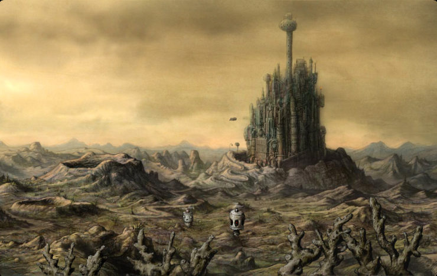
Самый, пожалуй, привычный для нас вид приключений. Здесь мы будем кликать мышкой по экрану в поисках интерактивных областей, к которым можно применить разные действия. Собираем предметы, комбинируем их и решаем несложные головоломки, получая новые подробности сюжета и открывая новые локации (Machinarium, Thimbleweed Park, Grim Fandango).
FMV-игры
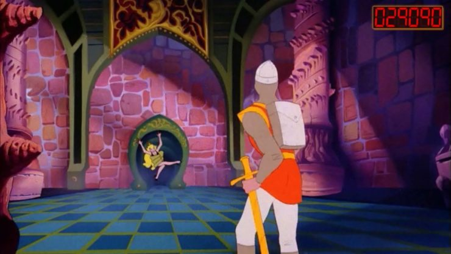
Данный жанр родился в момент, когда графика еще не была представлена на должном уровне и на компьютерах и консолях сложно было вообразить проекты с фотореалистичными текстурами и моделями уровня кинофильмов. Разработчики вышли из положения, записав целые фильмы или мультипликацию, разделив их на фрагменты. Игрок мог смотреть ролики, лишь изредка выбирая действие персонажа (Dragon’s Lair). Порой это были смешения с point-and-click (Phantasmagoria).
Со временем и этот подвид развлечений остался только в сердцах и памяти ностальгирующих фанатов и уступил место более развитому направлению.
Интерактивное кино

Технологии шагнули далеко вперед и появился жанр, который знаком многим. Он использует живую игру актеров, но оцифрованную при помощи захвата движения тел и лиц. Первой попыткой можно было бы назвать Omikron: The Nomad Soul, который попытался сформулировать основы будущего направления, но был слишком претенциозен и намешал избыточное количество компонентов в один проект.
Следующие попытки (Fahrenheit, Heavy Rain, Beyond: Two Souls) окончательно оформили кор-геймплей, лишь изредка разбавляя его новыми механиками. Перед нами всегда очень крепкое повествовательное произведение, с интригующим сюжетом, крутыми поворотами и прекрасной игрой виртуальных актеров.
В последних проектах добавилось больше нелинейности и можно получить различные варианты концовки и пройти игры несколько раз, чтобы увидеть все возможные ветки (Detroit: Become Human, Until Dawn, The Quarry).
Головоломки
Данный вид времяпрепровождения за игровым устройством был в первую очередь основан на существующих в реальной жизни механиках загадок и головоломок или синтезировал новые логические задачки. Со временем границы жанра сильно размылись из-за невозможности его отдельного существования от более комплексных типов. Головоломки стали частью приключений, квестов, аркад и даже экшенов.
Escape the Room

Побег из комнаты – это просто набор головоломок разной степени сложности, где нужно использовать свою логику, чтобы покинуть помещение (Escape Simulator). Подобный командный досуг можно испытать и в реальной жизни, благо, подобных квестовых комнат стало предостаточно.
Логические игры

К логическим играм можно причислить все проекты, требующие от игрока решить головоломки с простыми механиками. Самой знаменитой такой серией можно считать Tetris, получивший множество реинкарнаций. В схожие попадают и шахматные головоломки (Chess Dungeons) и 3 в ряд (Beasties — Monster Trainer, Сокровища Монтесумы).
Викторины
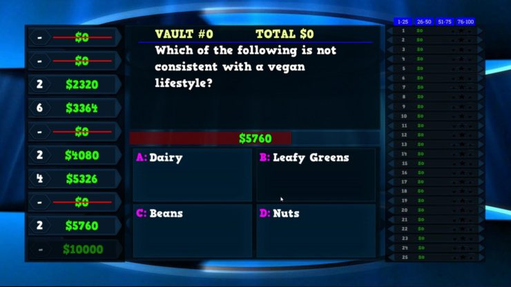
Представляли собой наборы вопросов по специфическим областям знаний с вариантами ответов, как знаменитые Сто к одному, Кто хочет стать миллионером. Сейчас все больше являются комичными наборами миниигр с шуточными вопросами, требующими остроумных ответов (The Jackbox Party).
Стратегии
В проектах данного жанра так или иначе задействовано управление отрядами армий, собственной империей, странами или целыми галактиками.
Стратегии в реальном времени

В RTS игровой процесс не прерывается на долгие раздумья о судьбах родины. Вы быстро должны обустроиться на местности, занять ближайшие точки для добычи ресурсов, строить укрепления и здания, нанимая армию, чтобы быть готовым нападать на противников или обороняться, если не будете достаточно расторопными.
Жанр очень популярен, как в одиночных сессиях, так и в онлайн сражениях. Мало кто не знает названия: Warcraft, Starcraft, Dune, Age of Empires, Command & Conquer, которые до сих пор популярны и любимы поколениями геймеров.
Пошаговые стратегии

Пошаговые стратегии не обременены необходимостью в поте лица стремиться обогнать противника в принятии решений. На это вам даются поочередные ходы, за время которых можно совершить путешествие по карте, построить здания в городе, посражаться с NPC и распределить ресурсы. Против вас играет только ваше тактическое мышление и способность мыслить на несколько шагов вперед.
Вы точно вспомните Heroes of Might & Magic, Disciples, King’s Bounty и другие проекты данного поджанра.
Тактики (Варгеймы)
.jpeg)
Варгеймы чаще всего имеют в основе своей реальные военные конфликты или сражения и дают вам почувствовать себя командиром армии. У вас нет возможности строить базы или добывать ресурсы. Вы должны лишь атаковать противника имеющимися силами, изредка призывая подкрепления, если такое оговорено в правилах. (Blitzkrieg, Panzer Tactics, Warhammer: Mark of Chaos).
4X
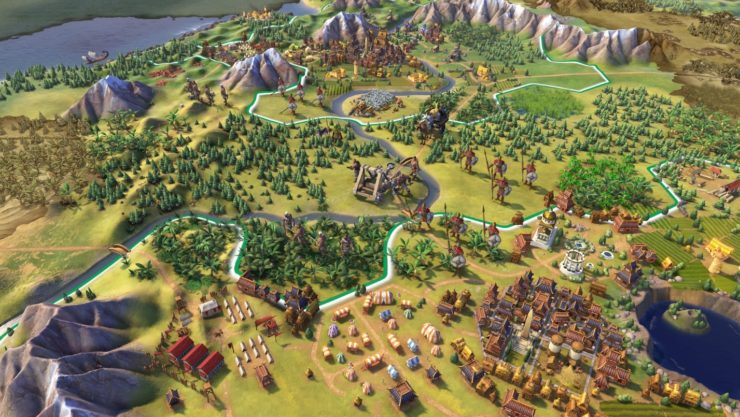
Эти стратегии опираются на 4 основных правила: изучай, расширяй, уничтожай, эксплуатируй. Они и дали название поджанру. Вы берете на себя обязанности властителя целой страны, империи или цивилизации и ведете свой народ к мировому господству, развивая технологии, дипломатию и военное ремесло (Sid Meier’s Civilization, Stellaris, Northgard, Dune: Spice Wars).
Ролевые игры
Ролевые игры или РПГ заставляют геймера отыгрывать своего персонажа, принимать решения, выбирать пути перемещения, способы улучшения, варианты в диалогах с NPC. Подопечного надо снабжать экипировкой и скиллами, прокачивать его умения, настраивать внешний вид и профессиональную деятельность.
Партийные РПГ

Данный вид ролевок дает под контроль сразу несколько героев разных классов, которые участвуют в боях вместе, вместе решают конфликты и влияют на историю и окружение. Обычно в основе своей такие проекты имеют AD&D систему или схожие. В сражении предусмотрена боевая пауза, позволяющая раздать приказы (Dragon Age, Pool of Radiance, Pillars of Eternity, Divinity: Original Sin, отчасти первые Fallout).
Roguelike
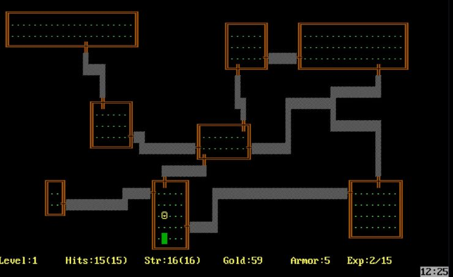
Истинных представителей жанра всего несколько (например, Dungeons of Dredmor), включая родоначальника Rogue. Сам он распался на новый поджанр РПГ Dungeon Crawl, многое подчерпнувший из строения карты и подхода к геймплею, а также некий набор игровых механик, что прозвали roguelite (Binding of Isaac, Risk of Rain, Rogue Legacy, FTL). Характеризует данный подход перманентная смерть и процедурная генерация приключений.
А еще изыскания на тему помогли получить следующие 2 поджанра РПГ.
Hack and slash

Diablo планировался именно, как roguelike с продвинутой графикой, но разработчикам стало немного тесно в его рамках и они изобрели новый жанр, который сам стал эталоном для многих подражателей на десятилетия вперед. Большая часть геймплея тут уделена боям в реальном времени и выбиванию из толп врагов барахла, продаваемого в местных магазинах, или получение редких вещей, что можно и на себя нацепить (Titan Quest, Sacred, Torchlight).
Action-RPG
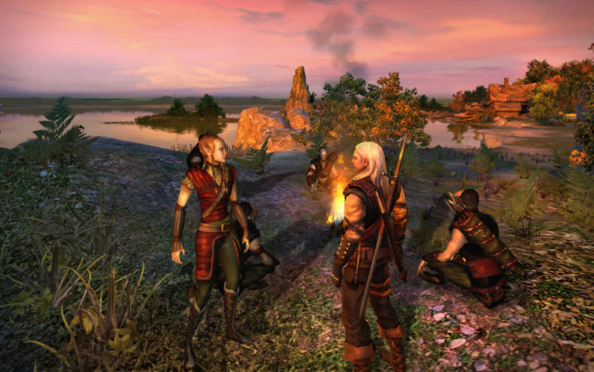
Еще одна из жанровых ипостасей Diablo, но несколько поменявшая критерии попадания в данный поджанр игр. Сейчас это РПГ с открытым миром, в реальном времени с полной свободой перемещения. Сохранились диалоги и их разветвленность, но добавились механики слэшера, экшена и даже шутера (трехмерные Fallout, Ведьмак, GreedFall, Mass Effect, The Elder Scrolls).
JRPG
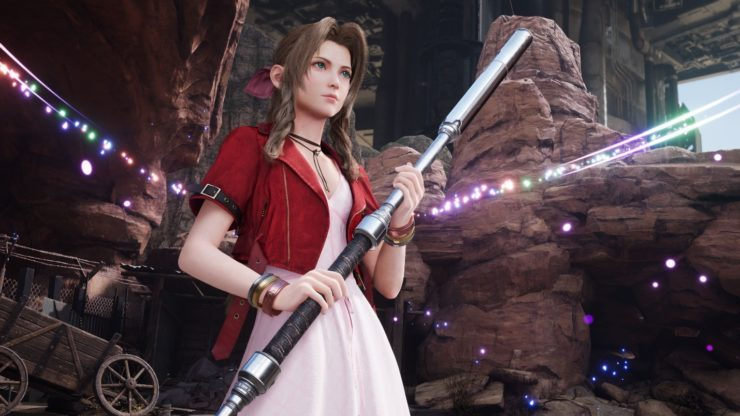
JRPG получила свое название из-за принадлежности к стране восходящего солнца. Японские ролевые игры стали отдельным видом РПГ, за счет почти всегда линейного повествования, но ярчайших образов героев и невероятной истории с множеством поворотов. Геймплейно это были первоначально пошаговые игры, но и здесь иногда случался перекос в dungeon crawl (Persona, Shin Megami Tensei) или экшен-РПГ (Tales of …, Ys). Жанр многими любим за колорит и часто аниме стилистику.